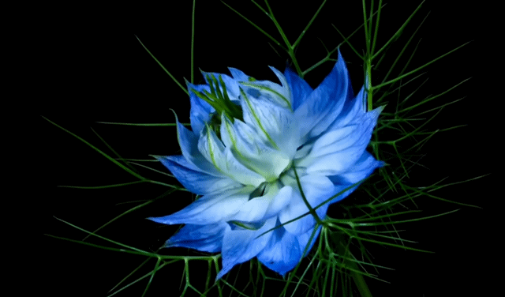
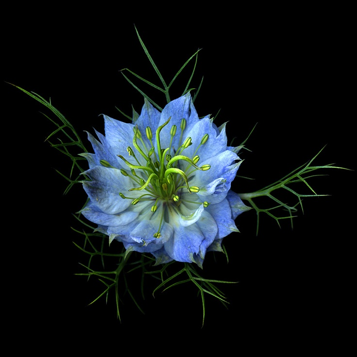
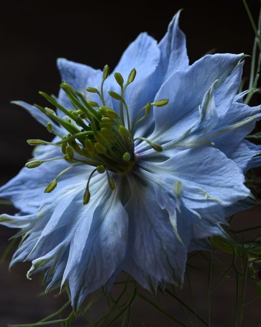
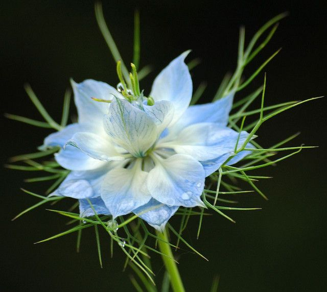

Nigella sativa (aka. blue nigella) is a charming garden flower admired for its delicate, feathery foliage and soft, sky-blue petals that form a star-like bloom. Often called "Love-in-a-Mist" due to the airy greenery that surrounds each flower, it brings a touch of whimsy to flower beds and wildflower mixes. Blooming in late spring to early summer, blue nigella is easy to grow and self-seeds readily, returning year after year. After flowering, it produces intricate, balloon-like seed pods that are as ornamental as the blossoms themselves, making it a favorite for dried floral arrangements and cottage-style gardens.


